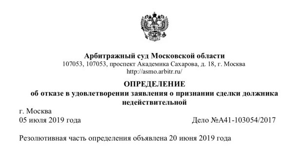

Из судебной практики
Спор о продаже машино-места
Финансовый управляющий оспорил продажу машино-места в деле о банкротстве. Суд отказал в признании сделки недействительной.
Смотреть фрагмент акта
Источник — «Юринвест групп»
Из судебной практики
Финансовый управляющий оспорил продажу машино-места в деле о банкротстве. Суд отказал в признании сделки недействительной.

Практикой руководит Василий. На первой встрече сверяем договор, переписку и платежи. Определяем, какие факты уже можно подтвердить, и согласуем дальнейшую работу и её стоимость.
Подрядчик смонтировал освещение на двух этажах. Заказчик принял один этап и перечислил часть суммы. Проследите по датам, что подтверждают акты и платёж.
Найдите иск с приложениями и определение о его принятии. Выпишите, что требует истец и к какому сроку суд просит представить документы. Добавьте договор, переписку и сведения об оплате.
Что подготовить для арбитражаДля начала понадобятся ИНН контрагента, номер дела и публикация о процедуре. К ним приложите документы о долге. По этим материалам можно проверить стадию дела и порядок предъявления требований.
Если вы кредиторДля оценки нужны документы, ближайшие сроки и ваша задача. Подготовка одного отзыва, переговоры с контрагентом и ведение дела во всех заседаниях требуют разного объёма работы. Его и стоимость согласуем до начала представительства.
Запишите, что произошло и чего вы хотите добиться. Сохраните обращение на своём устройстве и возьмите его на консультацию.
Составить обращение